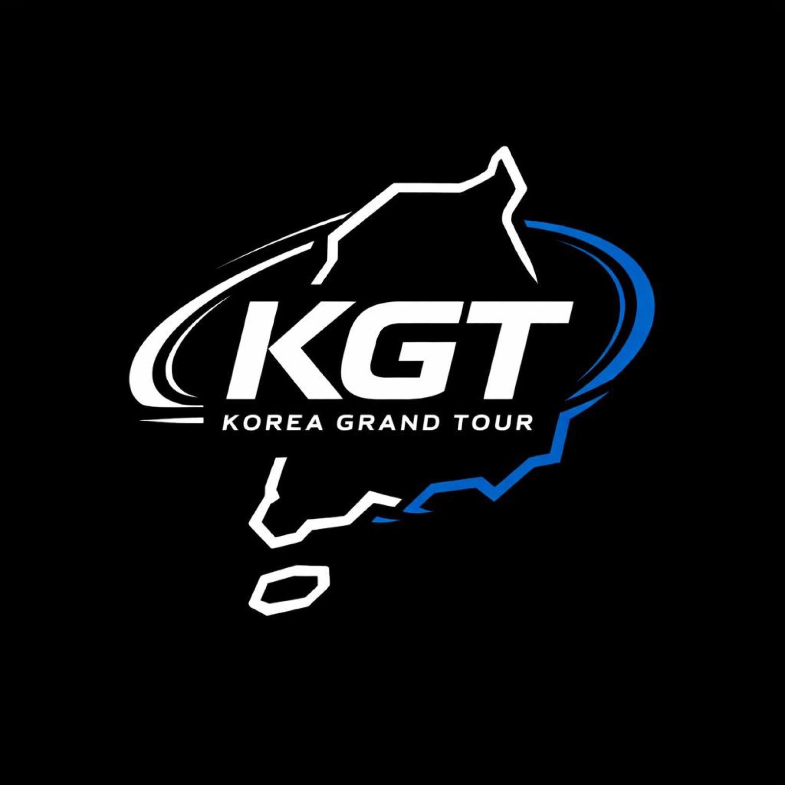
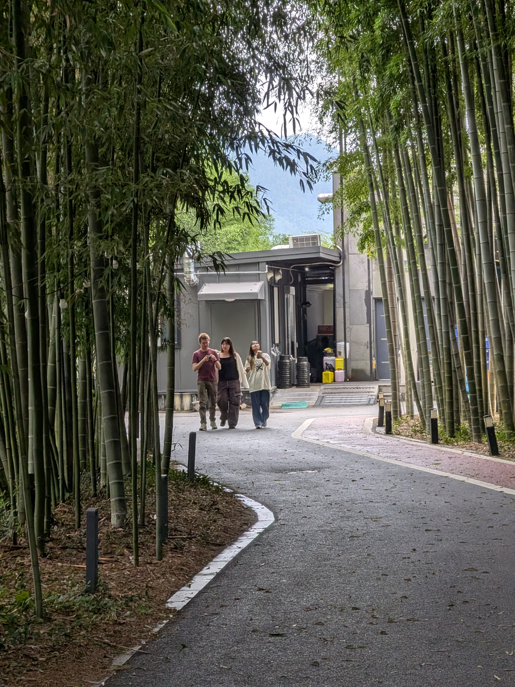

Great roads, not pressure.
Enjoy the route without turning the weekend into a race.

Korea Grand Tour Register nowAbout the tour
Korea Grand Tour brings car and bike people together from August 14-17, starting in Seoul, for a multi-day route through places worth slowing down for. The 2026 edition opens in three phases, with Phase One now revealed.
The promise
The event gives participants a clear route, shared checkpoints, city activities, and enough freedom for the weekend to feel personal. It is for drivers, riders, teams, and friends who want Korea to feel open and alive.
Phase One sets the first tone: Seoul starts the gathering, Inje brings performance energy, Cheongdo opens the countryside, Ulsan adds the coast, Damyang slows the rhythm into green scenery, and Jeonju brings the cultural heartbeat.

The real draw
The best part is not showing off a car. It is the small moments around the route: the first hello at check-in, the shared stop for food, and the convoy forming without anyone needing to force it.
Enjoy the route without turning the weekend into a race.
Checkpoints, activities, and city arrivals make it easy to connect.
Bring your ride solo or with friends and meet the group on the road.